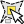
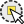
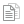

.
Strumenti generali¶
Scorciatoie da tastiera¶
Ci sono molte scorciatoie da tastiera per molte funzionalità di KADAS. Le scorciatoie sono elencate nella sezione label_menubar. Inoltre, l`opzione di menu Impostazioni ‣ Configura scorciatoie ‣ ti permette di modificare le scorciatoie da tastiera esistenti e di aggiungerne di nuove.
Figure Shortcuts 1:

Finestra scorciatoie  (Gnome)
(Gnome)
Configurare le scorciatoie è molto semplice; basta selezionare una funzionalità di interesse e cliccare [Cambia], [Elimina] o [Selezione predefinita]. Le configurazioni possono essere salvate in un file XML e caricate su un’altra installazione di KADAS.
Guide contestuali¶
Se vuoi ottenere maggiori informazioni su una funzionalità specifica puoi usare il pulsante [Aiuto] disponibile in molte finestre di dialogo. Nota che nel caso di plugin di terze parti la guida contestuale potrebbe rimandare ad una pagina web dedicata.
Visualizzazione¶
In modo predefinito, KADAS visualizza tutti i layer visibili ogni volta che la mappa viene aggiornata. La mappa viene aggiornata ogni volta che:
Aggiungi un layer
Sposti, ingrandisci o riduci la mappa
Ridimensioni la finestra di KADAS
Cambi la visibilità di uno o più layer
KADAS consente di controllare il processo di visualizzazione in diverse maniere.
Visualizzazione in funzione della scala¶
La visualizzazione in funzione della scala permette di specificare la scala minima e massima alla quale il vettore verrà visualizzato. Per impostare questa funzionalità, apri la finestra Proprietà facendo doppio click sul vettore. Nella scheda Generale, clicca sulla casella di controllo  Visualizzazione dipendente dalla scala: potrai cosi inserire i valori minimi e massimi di visualizzazione della scala.
Visualizzazione dipendente dalla scala: potrai cosi inserire i valori minimi e massimi di visualizzazione della scala.
I valori di scala possono essere determinati usando prima lo zoom sul layer per il quale si vuole impostarel’opzione e prendendo successivamente nota del valore di scala visualizzato nella barra di stato di KADAS.
Controllare la visualizzazione della mappa¶
Puoi controllare la visualizzazione della mappa in molti modi diversi, come descritto di seguito.
Sospensione della visualizzazione¶
Per interrompere la visualizzazione, clicca sulla casella di controllo Visualizza in basso a destra della barra di stato. Quando la casella Visualizza non è spuntata, KADAS non aggiorna la vista quando si verifica uno degli eventi precedentemente descritti nella sezione Visualizzazione. Alcuni casi in cui potresti voler sospendere la visualizzazione sono:
Aggiunta di molti layer con simbologia predefinita prima della visualizzazione
Aggiunta di uno o più layer di grosse dimensioni e impostazione di una scala prima della visualizzazione
Aggiunta di uno o più layer di grossa dimensione e zoom ad un’area specifica prima della visualizzazione
Combinazioni delle precedenti
Se la casella di controllo Aggiorna è spuntata, la visualizzazione e l’aggiornamento della mappa saranno immediati.
Controllare la visibilità dei layer quando sono caricati¶
Puoi scegliere l’opzione di caricare i nuovi layer senza che questi vengano immediatamente visualizzati sulla mappa. Ciò significa che quando aggiungerai un layer al progetto, la casella di controllo per la visibilità nella legenda risulterà disabilitata. Per impostare questa opzione, apri il menu Impostazioni ‣ Opzioni ‣ e clicca sulla scheda Visualizzazione. Deseleziona la casella di controllo Per impostazione predefinita i nuovi layer aggiunti alla mappa vengono visualizzati subito. Ogni layer aggiunto alla mappa risulterà essere quindi spento (invisibile).
Fermare la visualizzazione¶
Per fermare la visualizzazione della mappa primi il tasto ESC. In questo modo l`aggiornamento della mappa verrà bloccato e la mappa rimarrà parzialmente disegnata. Dopo aver premuto il tasto ESC potrebbe passare un po` di tempo finché l`interruzione della visualizzazione della mappa sia effettiva.
Nota
Attualmente non si può interrompere la visualizzazione in corso: questa opzione è stata disabilitata nella porta Qt4 a causa di diversi problemi dell’interfaccia utente (UI).
Aggiornamento della mappa durante la visualizzazione¶
Puoi impostare un’opzione per aggiornare la mappa man mano che gli elementi del layer vengono letti. In modo predefinito, KADAS non visualizza alcun elemento a video finché l’intero layer non è stato caricato. Per aggiornare la visualizzazione man mano che gli elementi vengono caricati, seleziona il menu Impostazioni‣ Opzioni ‣ e clicca sulla scheda Visualizzazione. Imposta il numero di elementi che vuoi che vengano caricati prima che la mappa venga aggiornata. Il valore pari a 0 disabilita l’aggiornamento durante la visualizzazione degli oggetti (impostazione predefinita). Un valore troppo basso diminuisce le prestazioni in quanto la mappa viene continuamente aggiornata man mano che gli elementi del layer vengono caricato. 500 è il valore suggerito.
Modificare la qualità della visualizzazione¶
Ci sono due opzioni per modificare la qualità della visualizzazione. Dal menu Impostazioni ‣ Opzioni ‣ clicca sulla scheda Visualizzazione e seleziona o deseleziona le seguenti caselle di controllo.
- Rendi le linee meno irregolari a spese delle prestazioni
- Risolvi problemi con i poligoni riempiti non correttamente
Velocizzare la visualizzazione¶
Ci sono due opzioni per modificare la qualità della visualizzazione. Dal menu Impostazione ‣ Opzioni ‣ clicca sulla scheda Visualizzazione e seleziona o deseleziona le seguenti caselle di controllo.
- Abilita buffer geometrie. Questa opzione fornisce prestazioni grafiche migliori a scapito della possibilità di annullare un ridisegno sullo schermo o di visualizzare i vettori in maniera incrementale. Se disabilitata, puoi impostare il Numero di geometrie da disegnare prima di aggiornare lo schermo, altrimenti questa opzione risulterà essere inattiva.
- Usa il caching del disegno quando possibile per velocizzare la visualizzazione
Misurazioni¶
Puoi effettuare misurazioni metriche solo con i sistemi di coordinate piane (es. UTM). Se la mappa caricata è definita in un sistema di coordinate geografiche (latitudine/longitudine), il risultato della misurazione di linee o aree sarà errato. Per effettuare misurazioni devi quindi impostare correttamente il sistema di coordinate della mappa (vedi sezione Lavorare con le proiezioni). Tutti i moduli di misura usano le opzioni di snapping del modulo di digitalizzazione. Questo è utile se vuoi misurare lungo linee o aree di vettori.
Per selezionare uno strumento di misura clicca su  e scegli lo strumento che vuoi usare.
e scegli lo strumento che vuoi usare.
Misurare lunghezze, aree ed angoli¶
Measure Line: KADAS is able to measure real distances
between given points according to a defined ellipsoid. To configure this,
choose menu option Settings ‣ Options, click on the
Map tools tab and select the appropriate ellipsoid. There, you can
also define a rubberband color and your preferred measurement units (meters or
feet) and angle units (degrees, radians and gon). The tool then allows you to
click points on the map. Each segment length, as well as the total, shows up in
the measure window. To stop measuring, click your right mouse button.
Note that you can interactively change the measurement units in the measurement
dialog. It overrides the Preferred measurement units in the options.
There is an info section in the dialog that shows which CRS settings are being used
during measurement calculations.
Figure Measure 1:

Misura distanze (Gnome)
 Misura area Questo strumento consente di misurare le aree; la finestra mostrerà unicamente l’area totale misurata. In più, se hai impostato una tolleranza di snap per il vettore (sezione snapping_tolerance), lo strumento farà lo snap sul vettore selezionato. Quindi, se vuoi misurare esattamente lungo una linea o un poligono devi prima definire la tolleranza di snap e poi selezionare il vettore. In questo modo, quando vengono usati gli strumenti di misura, ogni click del mouse (all’interno della tolleranza definita) si aggancerà a quel preciso vettore.
Misura area Questo strumento consente di misurare le aree; la finestra mostrerà unicamente l’area totale misurata. In più, se hai impostato una tolleranza di snap per il vettore (sezione snapping_tolerance), lo strumento farà lo snap sul vettore selezionato. Quindi, se vuoi misurare esattamente lungo una linea o un poligono devi prima definire la tolleranza di snap e poi selezionare il vettore. In questo modo, quando vengono usati gli strumenti di misura, ogni click del mouse (all’interno della tolleranza definita) si aggancerà a quel preciso vettore.
Figure Measure 2:

Misura area (Gnome)
 Misura angoli: grazie a questo strumento puoi misurare gli angoli. Clicca e disegna il primo segmento dell’angolo, poi sposta il mouse per disegnare l’angolo stesso; la misura apparirà in una finestra pop-up.
Misura angoli: grazie a questo strumento puoi misurare gli angoli. Clicca e disegna il primo segmento dell’angolo, poi sposta il mouse per disegnare l’angolo stesso; la misura apparirà in una finestra pop-up.
Figure Measure 3:
Misura angolo (Gnome)
Selezionare e deselezionare elementi¶
KADAS fornisce diversi strumenti per la selezione di elementi nella mappa. Per selezionare uno o più elementi clicca semplicemente su  e scegli lo strumento che preferisci:
e scegli lo strumento che preferisci:
- Seleziona il singolo elemento
 Seleziona elementi con un rettangolo
Seleziona elementi con un rettangolo Seleziona elementi con un poligono
 Seleziona elementi a mano libera
Seleziona elementi a mano libera Seleziona elementi con un cerchio
{kind=link}
{kind=link}
Per deselezionare tutti gli elementi selezionati clicca su  Deseleziona gli elementi da tutti i vettori.
Deseleziona gli elementi da tutti i vettori.
 Seleziona la geometria con una espressione permette di selezionare le geometrie tramite la finestra di dialogo delle espressioni. Vedere il capitolo Expressions per alcuni esempi..
Seleziona la geometria con una espressione permette di selezionare le geometrie tramite la finestra di dialogo delle espressioni. Vedere il capitolo Expressions per alcuni esempi..
Gli utenti possono salvare le geometrie selezionate in un Nuovo vettore in memoria oppure in un Nuovo vettore dal menu Modifica ‣ Incolla geometrie come... e selezionare la modalità desiderata.
Informazione elementi¶
Con lo strumento Informazioni elementi puoi interagire con gli elementi nella mappa ed ottenere gli attributi delle geometrie. Attiva lo strumento cliccando su Visualizza ‣ Informazione elementi, oppure usa la scorciatoia da tastiera Ctrl + Shift + I oppure ancora clicca sull’icona  Informazione elementi nella barra degli strumenti.
Informazione elementi nella barra degli strumenti.
If you click on several features, the Identify results dialog will list information about all the selected features. The first item is the number of the layer in the list of results, followed by the layer name. Then, its first child will be the name of a field with its value. The first field is the one selected in Properties ‣ Display. Finally, all information about the feature is displayed.
Puoi personalizzare questa finestra in modo da visualizzare determinati campi, ma in modo predefinito vengono mostrati tre tipi di informazione:
Azioni: puoi aggiungere le azioni nella lista degli elementi. Devi solamente cliccare sull’icona azione per eseguire l’azione. In modo predefinito è presente solo l’azione che apre il modulo degli attributi per la successiva modifica.
Derivato: queste informazioni vengono calcolate o derivano da altre informazioni. Verranno visualizzate le coordinate X e Y cliccate, l’area e il perimetro in unità di mappa per i poligoni, la lunghezza per le linee e gli ID delle geometrie.
Attributi dei dati: questa è l’elenco dei campi e relativi attributi della geometria cliccata.
Figure Identify 1:
Finestra di dialogo Informazioni elementi (Gnome)
Al di sopra della finestra ci sono cinque icone
 Espandi albero
Espandi albero Racchiudi albero
Racchiudi albero Copia attributi
 Stampa il responso HTML selezionato
Stampa il responso HTML selezionato
{kind=link}
{kind=link}
At the bottom of the window, you have the Mode and View comboboxes. With the Mode combobox you can define the identify mode: ‘Current layer’, ‘Top down, stop at first’, ‘Top down’ and ‘Layer selection’. The View can be set as ‘Tree’, ‘Table’ and ‘Graph’.
Lo strumento identifica permette di aprire automaticamente una maschera. In questo modo è possibile modificare gli attributi delle geometrie.
Puoi trovare altre opzioni nel menu contestuale dell’elemento identificato. Per esempio, dal menu contestuale puoi:
Visualizzare modulo geometria
Zoomare alla geometria
Copiare elementi: copiare tutti gli elementi e gli attributi della geometria
Imposta/ rimuovi la selezione della geometria: aggiungi alla selezione la geometria identificata
Copiare un valore di un attributo: copiare solo il valore dell’attributo identificato
Copiare attributi geometria: copiare solamente gli attributi;
Cancellare risultati: verranno cancellati i risultati nella finestra
Cancellare evidenziati: verranno cancellate le geometrie evidenziate sulla mappa
Evidenziare tutto
Evidenziare vettore
Attivare un vettore: scegliere un vettore che deve essere attivato
Proprietà del vettore: aprire la finestra delle proprietà del vettore
Espandi tutto
Racchiudi tutto
Decorazioni¶
Le decorazioni di KADAS includono: il reticolo, l`etichetta copyright, la freccia nord e la barra di scala. Sono usate per ‘decorare’ la mappa aggiungendo elementi cartografici.
Reticolo¶
 Reticolo ti permette di aggiungere un reticolo e le coordinata alla mappa.
Reticolo ti permette di aggiungere un reticolo e le coordinata alla mappa.
Figure Decorations 1:

Finestra di dialogo delle proprietà del reticolo
Seleziona dal menu Visualizza ‣ Decorazioni‣ Reticolo. Si aprirà un`altra finestra (vedi figure_decorations_1).
Attiva la casella di controllo
Abilita reticolo e imposta i valori che preferisci in funzione dei layer caricati sulla mappa.Attiva la casella di controllo
Scrivi coordinate e imposta le proprietà migliori in base agli elementi che hai caricato sulla mappa.Clicca su [Applica] per verificare che il risultato sia corretto.
Clicca [OK] per chiudere la finestra di dialogo.
Etichetta Copyright¶
 Etichetta copyright aggiunge un`Etichetta Copyright personalizzata in base al testo che preferisci far apparire sulla mappa.
Etichetta copyright aggiunge un`Etichetta Copyright personalizzata in base al testo che preferisci far apparire sulla mappa.
Figure Decorations 2:

La finestra di dialogo Copyright
Seleziona dal menu Visualizza ‣ Decorazioni‣ Etichetta copyright. Si aprirà un`altra finestra (vedi figure_decorations_2).
Digita il testo che vuoi aggiungere alla mappa. Puoi anche usare il linguaggio HTML come mostrato nell’esempio.
Scegli la posizione dell’etichetta dal menu a tendina Posizione
 .
.Assicurati che la casella di controllo
Abilita etichetta di copyright sia spuntata.Clicca [OK].
Nell’esempio di sopra, KADAS inserisce il simbolo di copyright, seguito dalla data, nell’angolo in basso a destra della mappa.
Freccia Nord¶
 Freccia nord aggiunge alla mappa una semplice freccia indicante il nord. Attualmente c’è un solo stile disponibile. Puoi modificare manualmente l’angolo della freccia o lasciare che KADAS imposti automaticamente la direzione. Per il posizionamento della freccia hai quattro possibilità, corrispondenti ai quattro angoli della mappa.
Freccia nord aggiunge alla mappa una semplice freccia indicante il nord. Attualmente c’è un solo stile disponibile. Puoi modificare manualmente l’angolo della freccia o lasciare che KADAS imposti automaticamente la direzione. Per il posizionamento della freccia hai quattro possibilità, corrispondenti ai quattro angoli della mappa.
Figure Decorations 3:
La finestra Freccia Nord
Barra di Scala¶
 Barra di scala aggiunge una semplice barra di scala alla mappa. Puoi controllare il posizionamento, lo stile, il colore e le dimensioni della barra.
Barra di scala aggiunge una semplice barra di scala alla mappa. Puoi controllare il posizionamento, lo stile, il colore e le dimensioni della barra.
Figure Decorations 4:

La finestra Barra di Scala
KADAS supporta solamente la visualizzazione della scala nella stessa unità di misura della mappa. Se l’unità di misura dei layer è il metro, non potrai quindi creare una barra di scala in piedi. Allo stesso modo, se usi i gradi decimali, non potrai creare una barra di scala che mostri le distanze in metri.
Per aggiungere una barra di scala:
Seleziona dal menu Visualizzazione ‣ Decorazioni‣ Barra di scala. Si aprirà cosi una finestra di dialogo (see figure_decorations_4)
Scegli la posizione dell’etichetta dal menu a tendina Posizione
.Scegli lo stile dal menu a tendina Stile della Barra di Scala
.Scegli il colore della barra di scala dal menu Colore della barra
 o usa il colore nero predefinito.
o usa il colore nero predefinito.Imposta la dimensione della barra e la sua etichetta Dimensione della barra
 .
.Assicurati che la casella di controllo
Abilitare barra di scala sia spuntata.Se vuoi, spunta anche la casella di controllo
Arrotonda automaticamente il numero durante il ridimensionamento.Clicca [OK].
Suggerimento
Impostazioni delle decorazioni
Quando salvi un progetto .qgs, ogni impostazione relativa alle decorazioni viene salvata nel file e ripristinata alla successiva apertura del progetto.
Note testuali¶
Lo strumento  Nota testuale nella barra degli attributi permette di posizionare del testo formattato sulla mappa. Per creare una nota, seleziona lo strumento Nota testuale e clicca sulla mappa.
Nota testuale nella barra degli attributi permette di posizionare del testo formattato sulla mappa. Per creare una nota, seleziona lo strumento Nota testuale e clicca sulla mappa.
Figure annotation 1:

La finestra di annotazione testuale
Se fai doppio click sull’elemento aggiunto alla mappa si aprirà una finestra di dialogo con diverse opzioni. Avrai accesso a un editor per aggiungere il testo della nota. Inoltre hai anche la possibilità di scegliere se la nota dovrà essere posizionata su un punto preciso della mappa (visualizzata come indicatore) oppure se la posizione della nota dovrà essere relativa a una posizione dello schermo (quindi indipendente dalla mappa). Puoi muovere sia tutta la nota (trascinando l’indicatore) sia solamente il testo (trascinando il riquadro del testo).
Con lo strumento  Muovi nota puoi spostare la nota dove preferisci.
Muovi nota puoi spostare la nota dove preferisci.
Note Html¶
Lo strumento  Nota Html presente nella barra degli attributi, ti permette di creare una nota con del testo formattato in linguaggio html. Seleziona lo strumento Nota Html, clicca sulla mappa e inserisci il testo html nel riquadro della nota.
Nota Html presente nella barra degli attributi, ti permette di creare una nota con del testo formattato in linguaggio html. Seleziona lo strumento Nota Html, clicca sulla mappa e inserisci il testo html nel riquadro della nota.
Note SVG¶
Lo strumento  Nota SVG ti permette di aggiungere un simbolo SVG nel riquadro della nota e piazzarlo sulla mappa. Per creare una nota SVG, seleziona lo strumento Nota SVG, clicca sulla mappa e aggiungi il percorso al file SVG nella finestra di dialogo.
Nota SVG ti permette di aggiungere un simbolo SVG nel riquadro della nota e piazzarlo sulla mappa. Per creare una nota SVG, seleziona lo strumento Nota SVG, clicca sulla mappa e aggiungi il percorso al file SVG nella finestra di dialogo.
Modulo annotazioni¶
Puoi anche creare moduli di note personalizzati. Usa lo strumento Nota con modulo per visualizzare gli attributi di un vettore con un modulo personalizzato creato con Qt Designer (vedi figure_custom_annotation). La nota con modulo è simile al modulo dello strumento ’Informazioni elementi, con la differenza che le informazioni sono visualizzate attraverso una nota. Vedi il video https://www.youtube.com/watch?v=0pDBuSbQ02o di Tim Sutton per ulteriori informazioni.
Figure annotation 2:

Modulo personalizzato qt designer di annotazioni
Nota
Nota: Premendo Ctrl+T con uno strumento nota attivo (Nota testuale, Nota con modulo, Muovi nota) lo stato di visualizzazione delle note si inverte: se sono visibili diventano invisibili e viceversa.
Segnalibri geospaziali¶
I segnalibri geospaziali consentono di memorizzare una posizione geografica alla quale potrai ritornare in un secondo momento.
Creazione di un segnalibro¶
Per creare un segnalibro:
Usa lo zoom o muovi la mappa all’estensione d’interesse.
Seleziona l’opzione Visualizza‣ Nuovo segnalibro‣ oppure premi Ctrl-B.
Inserisci un nome descrittivo per il segnalibro (fino a 255 caratteri).
Premi Invio per aggiungere il segnalibro o [Close] per uscire senza aggiungerlo.
Nota che puoi avere più di un segnalibro con lo stesso nome.
Uso e gestione dei segnalibri¶
Per usare o gestire i segnalibri, seleziona l’opzione Visualizza‣ Mostra segnalibri ‣. La finestra di dialogo Segnalibri geospaziali ti consente zoomare a un segnalibro o di eliminarlo. Non puoi modificare né il nome né le coordinate di un segnalibro.
Zoom a un segnalibro¶
Dalla finestra Segnalibri geospaziali, seleziona il segnalibro desiderato cliccandoci sopra, quindi clicca su [Zoom A]. Puoi usare lo zoom su un segnalibro anche facendoci doppio click.
Cancellare un segnalibro¶
Per cancellare un segnalibro, clicca sulla finestra di dialogo Segnalibri geospaziali [Elimina]. Conferma la scelta cliccando su [OK] o annulla cliccando su [Close].
Importa/ Esporta segnalibri¶
Per condividere o trasferire i tuoi segnalibri tra computer differenti puoi utilizzare il menu Condividi nella finestra Segnalibri Geospaziali
Progetti nidificati¶
Se vuoi nidificare dei layer di altri progetti nel tuo progetto attuale, seleziona Layer ‣ Includi layer e gruppi....
Layers inclusi¶
La finestra di dialogo ti permette di scegliere quali layer di altri progetti puoi includere. Di seguito un piccolo esempio:
Scegliere
 per cercare un altro progetto del dataset Alaska.
per cercare un altro progetto del dataset Alaska.Seleziona il progetto grassland. Puoi vedere il contenuto del progetto (vedi figure_embed_dialog).
Premi Ctrl, clicca sui layer grassland e regions e poi premi su [OK]. I layer selezionati verranno aggiunti sia nella legenda che sulla mappa.
Figure Nesting 1:
Selezione dei layer e dei gruppi da inserire
Anche se i layer nidificati sono modificabili, non puoi modificarne le proprietà, come stile ed etichette.
Rimuovi i layer nidificati¶
Cliccare con il tasto destro sul layer aggiunto e scegliere  Rimuovi.
Rimuovi.